Hobart, Tasmania · Open to internship & graduate opportunities
I combine emerging software and systems skills with two years of hands-on quality engineering experience to build practical, reliable solutions for technology and advanced manufacturing.
ICT · QUALITY · MANUFACTURING
ICT student with 2 years of quality engineering experience
✨ Explore the experiences behind my career transition
My value at a glance
Proof of capability
Cleanroom governance, investigation and traceable corrective action.
HPLC, UV-Vis, controlled testing and technical reporting.
Python logic that stores recipes and recommends meals from ingredients.
Selected evidence
Advanced manufacturing · Quality engineering
Biotechnology · R&D
Python · Personal project
Biochemical Technician (R&D) · Bionime · Dec 2023–Mar 2024
My science foundation became practical R&D experience at Bionime Corporation. I supported blood-glucose sensor optimisation, operated HPLC and UV-Vis instruments, analysed experimental data and prepared technical reports for R&D decisions.
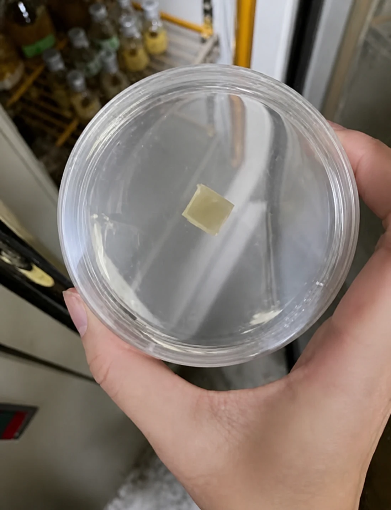
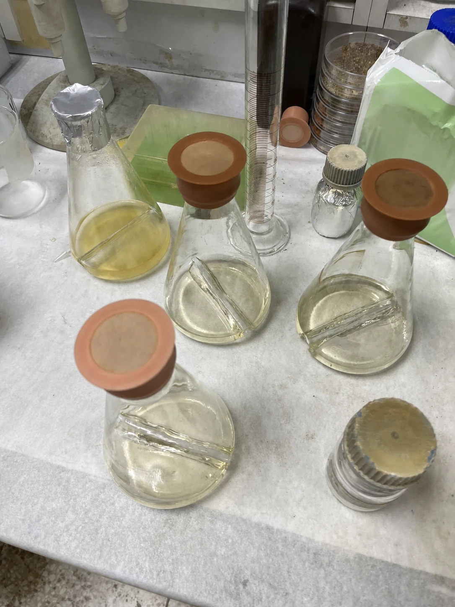
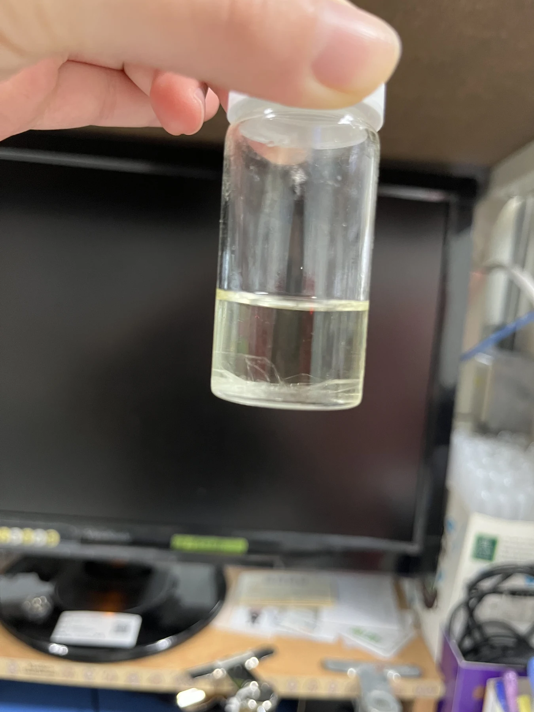
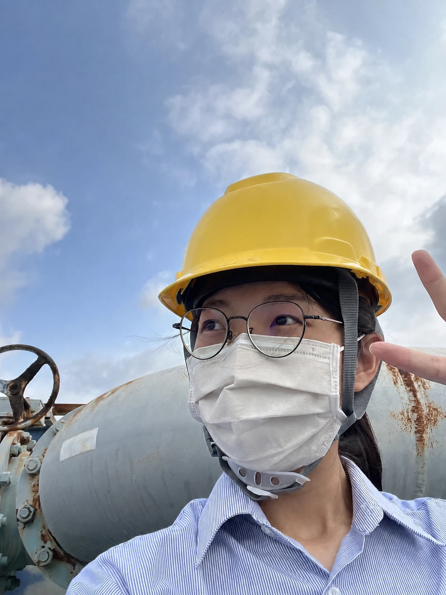
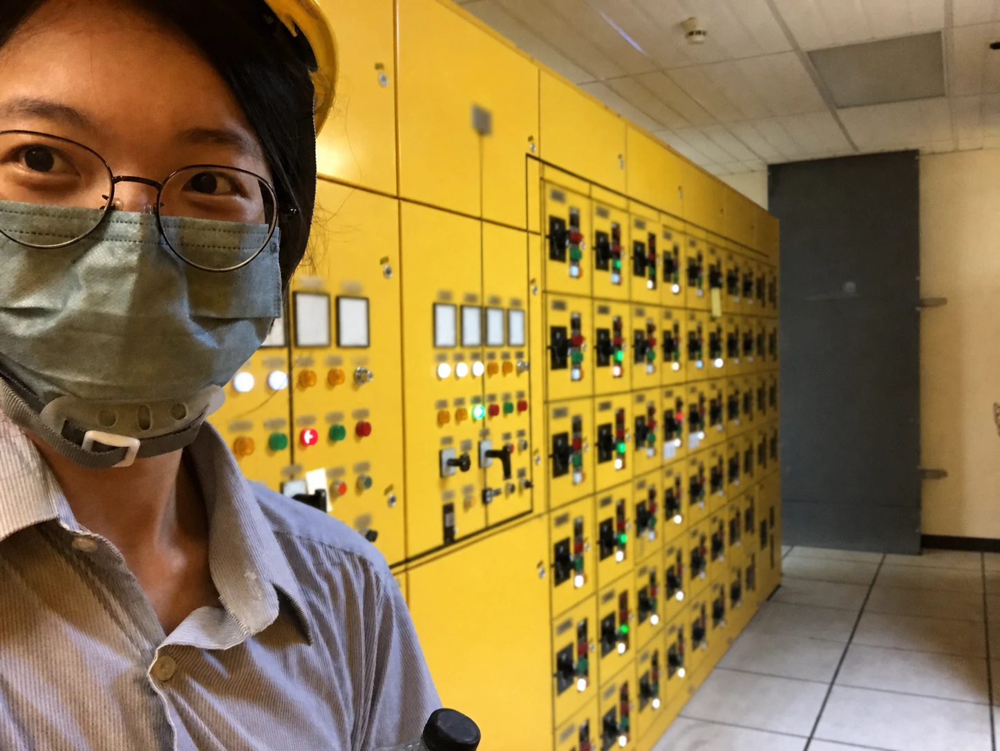
BSc Chemical Engineering · NCHU · 2019–2023
My Chemical Engineering and Biotechnology double degree gave me a strong systems mindset. During my Environmental Engineering Internship at Onyx Ta-Ho Environmental Services (TCC × Veolia Joint Venture, Jul–Aug 2022), I supported environmental operations and documentation while developing practical understanding of industrial processes, waste management and sustainability.
Formosa AdvEnergy — 2 Years Industry Experience
During two years at Formosa AdvEnergy Technology, I developed and maintained ISO 9001 and IATF 16949 quality systems, conducted root-cause analysis and corrective actions, and supported cleanroom projects with production, R&D and maintenance teams. Earlier, during my Quality Engineer Internship at Chain-Ray in 2023, I supported product inspection, quality analysis, documentation and production-quality improvement.
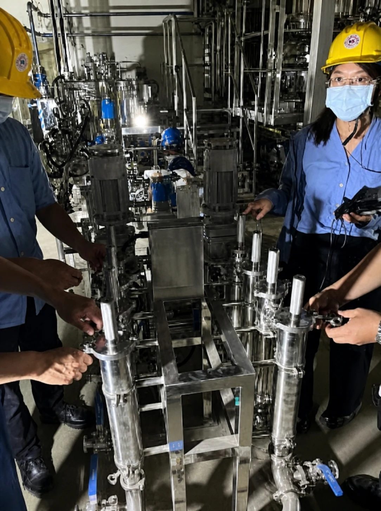
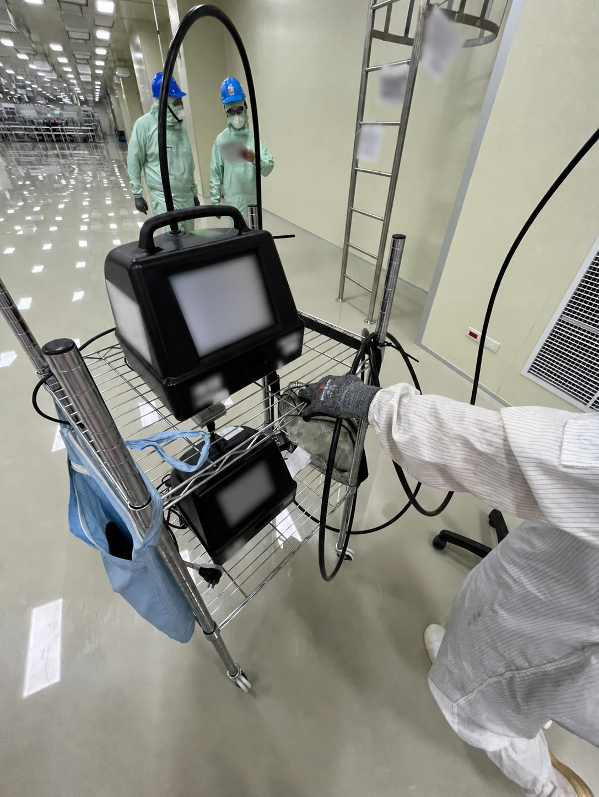
Python coursework project · Demonstration
A command-line recipe manager that stores structured recipe data, supports search, filters and sorting, and recommends meals by matching ingredients already available at home.
Front-end project · You are viewing it now
A responsive portfolio built with semantic HTML, CSS and JavaScript, combining recruiter-focused case studies with an interactive articulated character and role-based storytelling.
Explore this website ↑Master of Information & Communication Technology · UTAS
I am building practical software skills through my Master of Information and Communication Technology at the University of Tasmania. My current evidence includes a working Python recipe application and this interactive portfolio, with a longer-term focus on digital tools for real operational and manufacturing problems.
MyRecipe · Python
Working application with structured models, JSON persistence, filtering, sorting and ingredient-based recommendations
Interactive Portfolio · HTML, CSS & JavaScript
Responsive information architecture, interactive SVG character, accessible controls and evidence-led case studies
Professional Development
Commonwealth Bank Software Engineering and Data Science job simulations · AI Skills Fest 2026
Where Science Meets Creativity
Baking is where science meets art — and it is one of my favourite ways to unwind. The precision of measuring, the chemistry of leavening and the patience of proofing are not so different from laboratory work. I enjoy creating steamed buns, filled rolls, festive cookies, decorated cake pops and character-inspired bread.
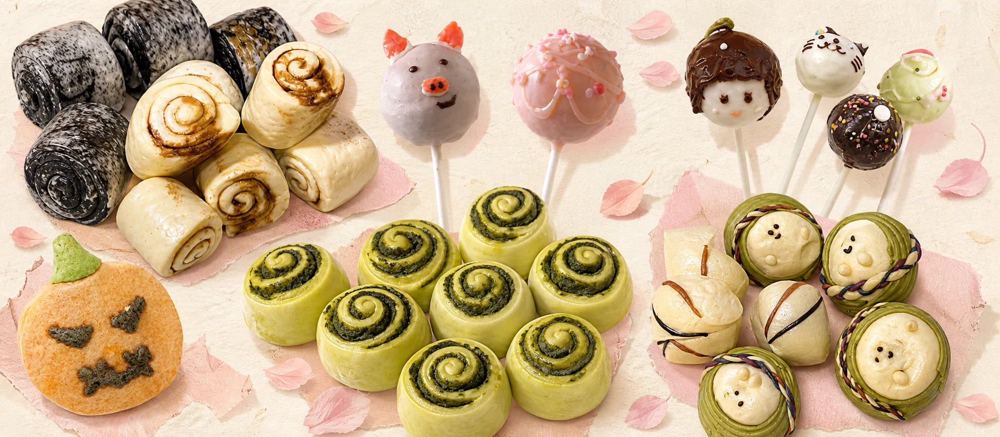
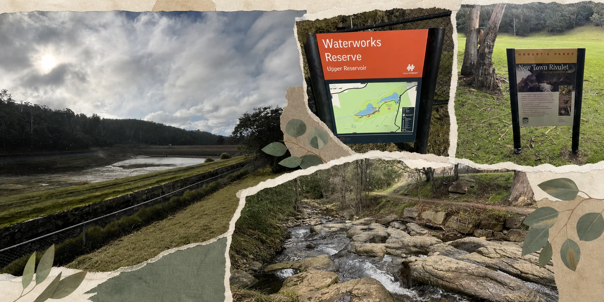
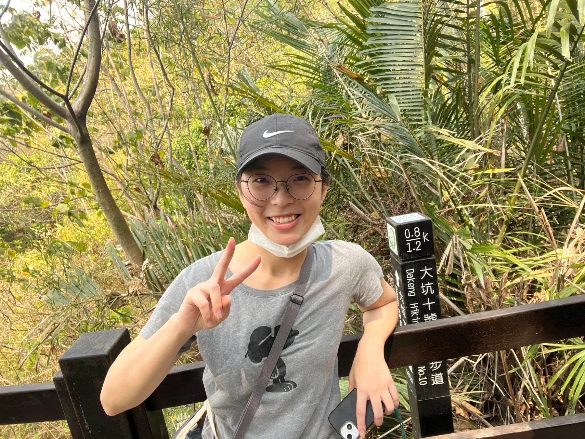
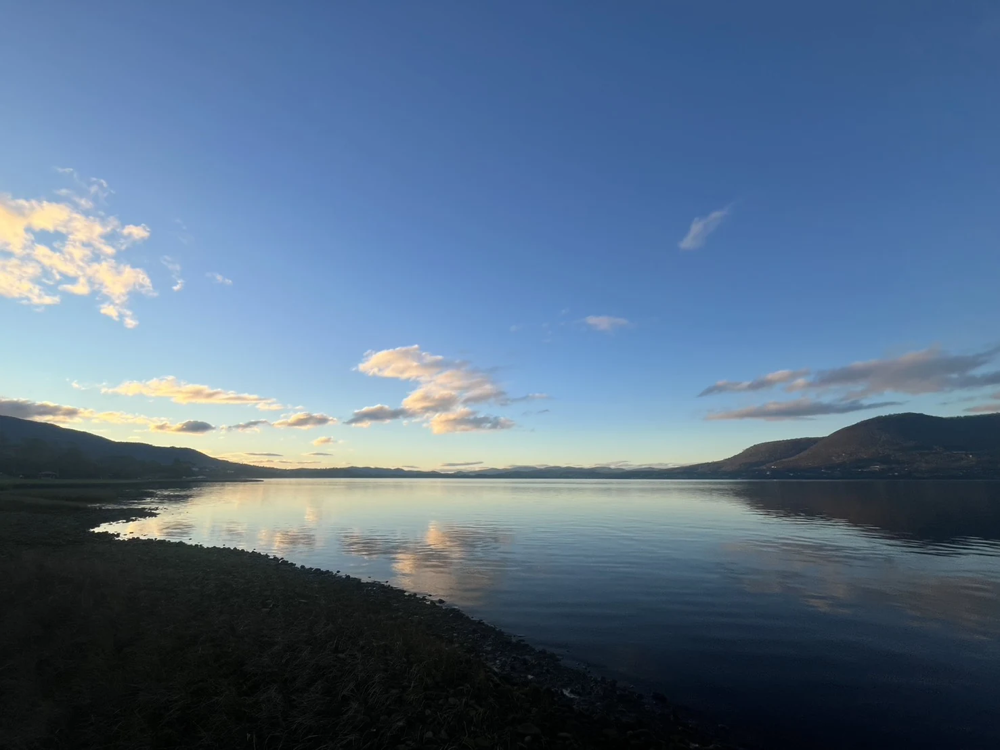
Tasmania · Taiwan
Living in Tasmania has introduced me to Hobart's natural landscapes, including Waterworks Reserve, New Town Rivulet and the river scenery around Claremont. Hiking clears my mind, builds persistence and gives me a grounded way to explore my new home.
An Unconventional Academic Journey
My education connects three fields: Chemical Engineering, Biotechnology and Information Technology. Science gave me rigour, engineering developed my systems thinking, and ICT is giving me the tools to build practical digital solutions.
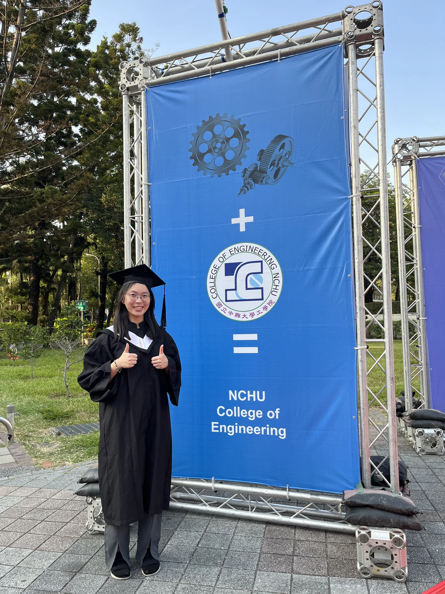
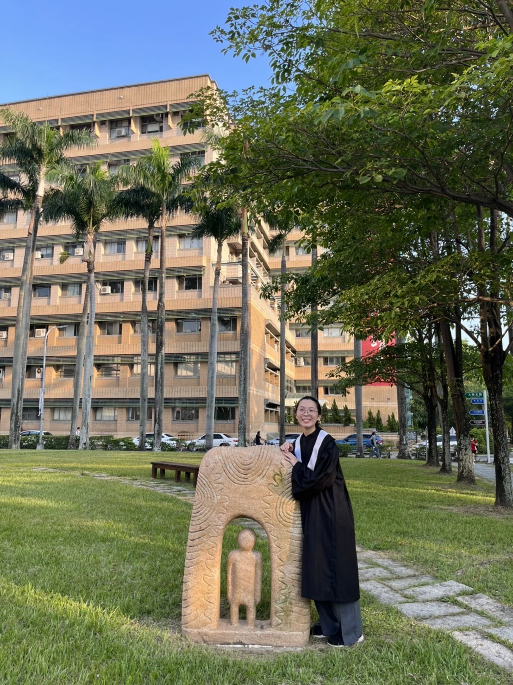
Get in touch
Seeking internship and graduate opportunities in Tasmania · IT · Digital Systems · Advanced Manufacturing
Built with HTML · CSS · JavaScript
Biochemical Technician (R&D) · Bionime · Dec 2023–Mar 2024
A creative escape
University of Tasmania
National Chung Hsing University
Formosa AdvEnergy · Mar 2024–Feb 2026
BSc Biotechnology · NCHU · 2019–2023
Exploring Australia & beyond
An unconventional journey
Hobart, Tasmania